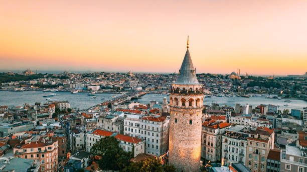
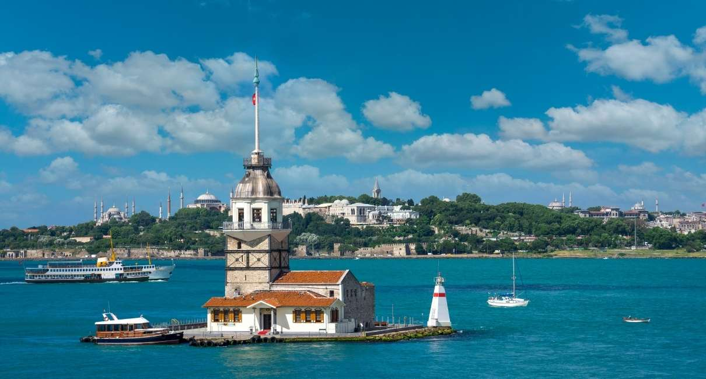

Haliç'i ve Boğaz'ı kuşbakışı izleyebileceğiniz, Cenevizlilerden kalan bu eşsiz kule hakkında ziyaret saatleri ve giriş ücretleri için: Müzeler Genel Müdürlüğü Sayfasında Aç

Üsküdar açıklarında, denizin ortasında yüzyıllardır masallara konu olan bu büyüleyici fener kulesinin tarihçesi ve ulaşım bilgileri için: Kız Kulesi Web Sitesine Git

Bu saray hakkında detaylı bilgi için: kültür Portalı'na Git